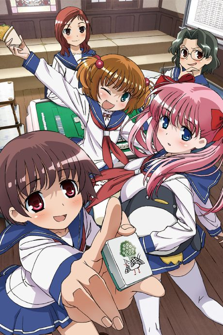
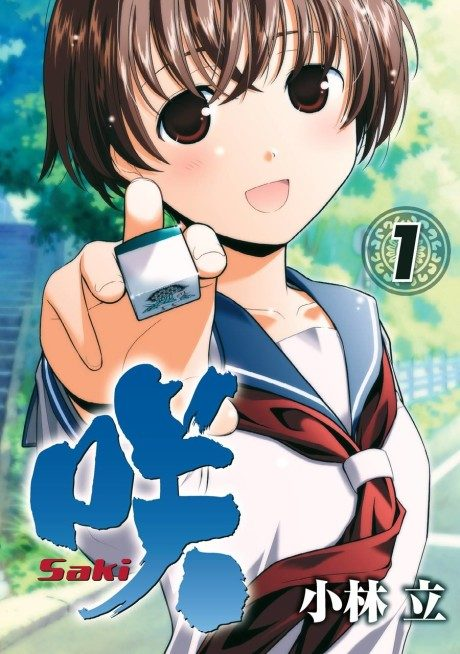

Saki
咲-Saki-
Saki, a girl who learned to always come out even at family mahjong, joins her high school's mahjong club.
We haven't found where the anime ends in the manga yet.
7.2AniList score
—Animeter, no votes yet
38episodes, 2 seasons
Rate it or report where you stopped
Anime finished. Where does the manga pick up?
StatusNo source yet
We looked for where the anime ends in the manga but found no source we trust yet. The manga is still running.
More like Saki
 Done7.8
Done7.8
 Manga Ch. 297.2
Manga Ch. 297.2
 Unclear8.0
Unclear8.0
 Unclear8.2
Unclear8.2
 Manga Ch. 228.7
Manga Ch. 228.7
 Unclear7.2
Unclear7.2
 Manga Ch. 296.6
Manga Ch. 296.6
 Manga Ch. 717.9
Manga Ch. 717.9
 Manga Ch. 257.4
Manga Ch. 257.4
 Manga Ch. 257.8
Manga Ch. 257.8
 Unclear7.8
Unclear7.8
 Unclear8.2
Unclear8.2